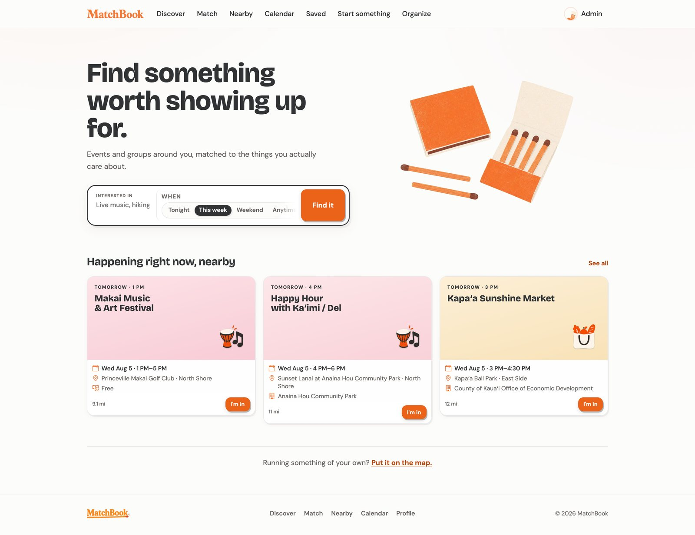
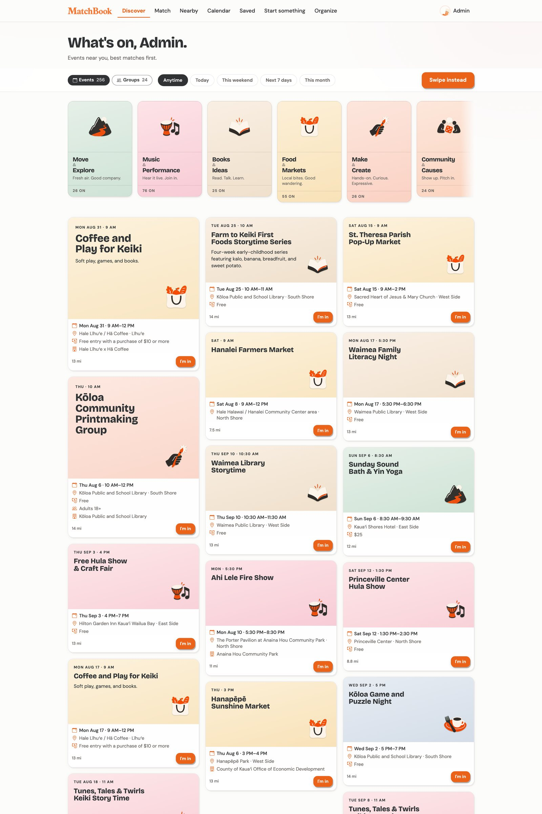
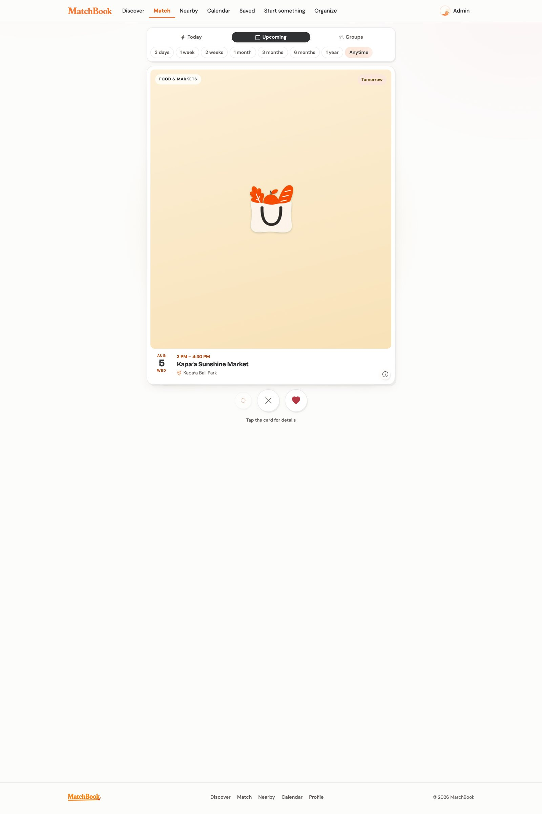
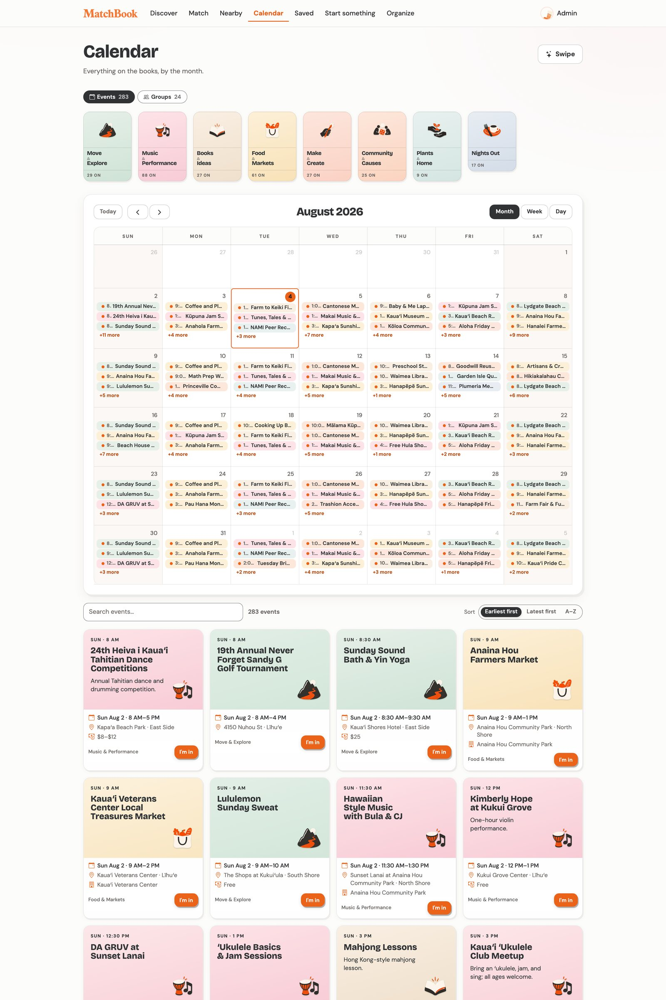
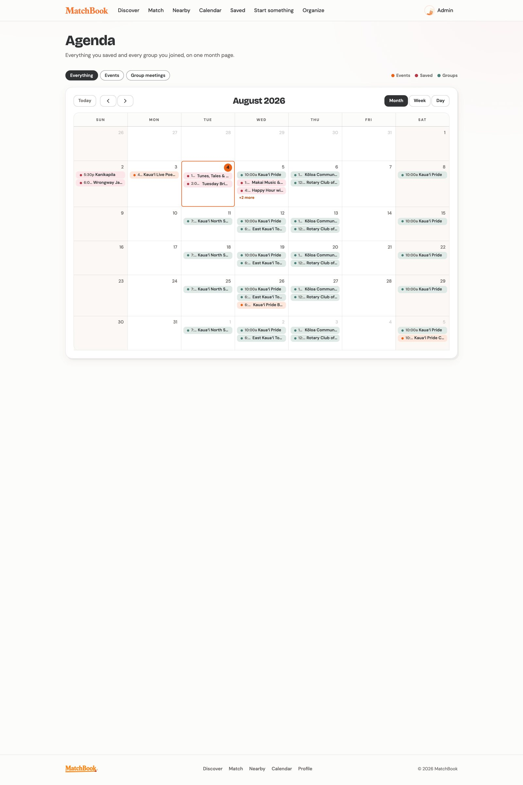
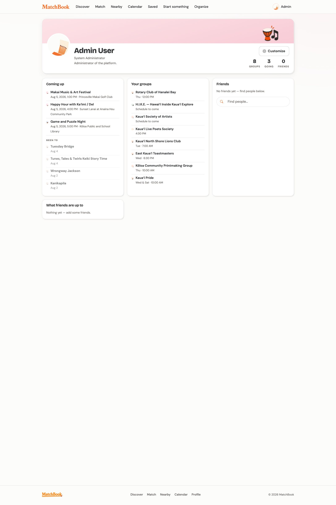
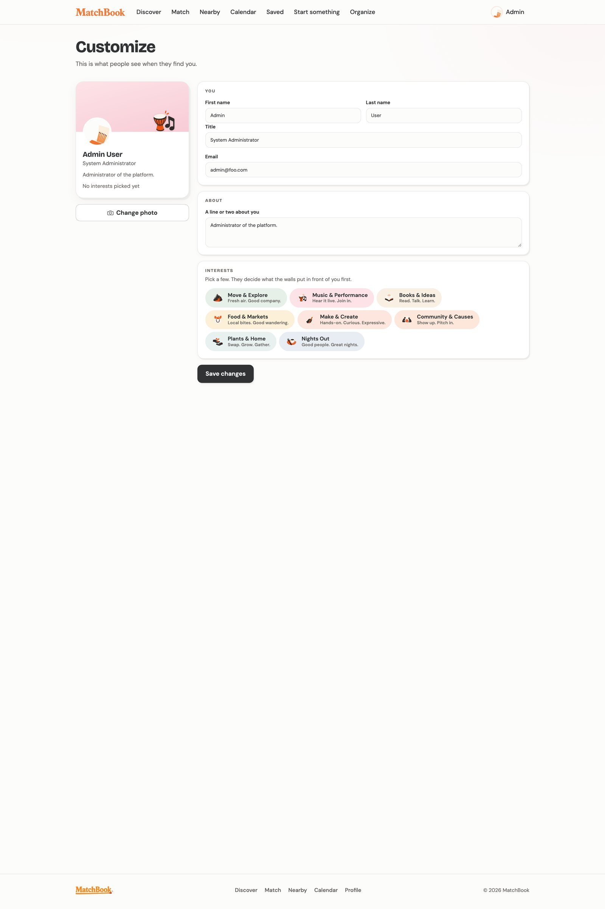

Interest comes first
Events are ordered by stated interests, not by volume or recency alone. People see what fits before what is merely nearby.
Find something worth showing up for.
MatchBook is a not-for-profit community platform for the island of Kauaʻi. It gathers the island’s events and groups, matches them to each person’s interests, and turns the result into a plan. It is free for residents and visitors.
A community project, built to serve the island rather than a market.
No fee for residents or visitors — at launch and after.
Public release is weeks away.

Working build · Kauaʻi community dataThe front door: what is happening nearby, this week, and what to join next.
The current working dataset: island events, groups, and venues used to validate discovery, matching, and planning ahead of launch.
Kauaʻi’s community life is announced across county calendars, library pages, radio calendars, flyers, and social feeds. No single place holds all of it, so events reach the people already watching the right channel and miss everyone else.
MatchBook consolidates that information and matches it to each person’s stated interests. The result is a short list of events that fit — with the schedule, the location, and the group behind each one.
The questionHow short can the path be between hearing about something and attending it?
Events are ordered by stated interests, not by volume or recency alone. People see what fits before what is merely nearby.
Saves and RSVPs land on one calendar, so deciding and scheduling happen in one step, not across two apps.
Groups create and maintain their own events inside the product, through the same interface residents use.
Interests are set once. Everything after runs in one loop.
Each surface handles one job: discover, decide, or plan.






A drawn wordmark, an illustration set, and motifs for the core interest topics.
The matchbook is the organizing object: small, familiar, made for starting something. It appears in the wordmark, in the match illustrations, and in the interface’s empty states.
Each topic carries its own motif — music, food, outdoors, community, books, making — used consistently across cards, calendar entries, and filters, so categories read at a glance.
Interfaces read live data. Every write passes through validated, permissioned server methods.
Calendars, feeds, and group pages update as data changes — no refresh, no polling logic in the interface.
Every change passes through schema-checked methods. The client cannot write to the database directly.
Publications and role checks limit each account to the data it is allowed to see.
Group management, event creation, and administration run in the same design system as the public product.
An automated register of the island’s public events, and a tiered recommendation system. Both follow the same rule: automation gathers, people decide, and nothing ships until it works.
A single TypeScript service will collect public events from the island’s institutional calendars — County of Kauaʻi services, the state library system, community radio, festivals, and the community college — on a schedule, through per-source adapters, without paid APIs.
Collection and publication are strictly separated. Automated collection produces evidence; a human review decision is the only thing that changes what the public sees. Every published event carries provenance back to its source, and anything unknown — a price, a venue detail, an accessibility note — is stored as unknown rather than guessed.
The central ruleCollected data creates immutable source observations. Only an approved review decision can modify a canonical public record.
Public county, library, radio, festival, and college calendars — each with its own adapter and each site’s crawl rules respected.
Responses are hashed and stored once; unchanged material is never reprocessed.
Each record becomes an immutable observation with evidence pointing into the snapshot.
Normalization, validation, recurrence handling, and duplicate detection under fixed policies.
People approve, merge, or reject. Similarity can suggest a duplicate; it can never authorize a merge.
Approved changes publish atomically, with audit history and provenance intact.
Recommendations will power the swipe deck and the main feed from one server-side service. The system is tiered: the launch tier is designed to work well with sparse data, and every learned model above it stays behind a feature flag until it beats the tier below on chronological evaluation.
The foundation is data that tells the truth. Interested, saved, going, and attended will be separate actions in an append-only history. Impressions will be recorded only when a card is actually seen. Distance will never be estimated without real coordinates, and unknown will stay unknown.
Append-only interactions, honest impression logging, normalized event data.
Content similarity, time-decayed graph affinity, schedule and distance fit, diversity re-ranking, controlled exploration.
Collaborative graph learning over users, groups, organizers, venues, and topics.
Inductive models that can rank events with no interaction history.
Weekday, seasonal, and momentum patterns learned over time.
Promotion requires beating the previous tier on a chronological holdout, then in shadow mode, then in a limited live test. Otherwise it stays off.
MatchBook treats what happens on Kauaʻi as shared infrastructure: free to use, collected from public sources, and governed by human review.
The same standard is being built into the engineering — server-side authority, append-only history, and systems promoted only when the evidence says they should be.